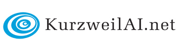
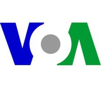
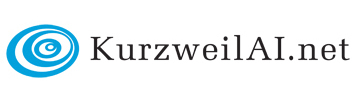
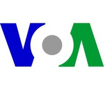

Research
In our multi-university open-source effort on building the Robo Brain, we are addressing research challenges in various domains:
Machine Learning
The key in building our RoboBrain is to be able to learn from a variety of multi-modal data and from many types of learning signals. Some examples are:
- Deep Learning: The large amounts of unlabeled data such as text, images, 3D models allow us to use unsupervised deep learning for learning good representations.
- Structured Learning and Discovering Latent Factors: There is a significant structure in the variety of data we have. Using techniques such as graphical models and nonparametric learning allows to model the relations such as spatial and semantic relations between objects.
- Interactive Online Learning: This gives us an opportunity to develop new theoretically-sound online learning algorithms that use the streaming data with weak labeling.
Large-Scale Data Processing
A robot has to learn from multi-modal data sources such as videos, images, language and even physical interaction with humans. This necessitates building a large-scale knowledge graph that allows efficient data storage, probabilistic queries and retrieval. Another challenge is the variety of learning algorithms the system should support, from large-scale offline learning to real-time online learning.
This multi-modality of data and the large probabilistic query space makes this problem more challenging than existing large-scale systems that typically store single type of data source such as images, or textual data.
Language and Dialog
For seamless human-robot collaboration robots should be able to interact with humans using natural language. Robots should not only parse the language, but also ground its meaning into suitable actions based on the context and the environment.
This require building learning algorithms that can model the ambiguity in language, the uncertainty in the robotic actions, and the implicit representation of the task and the environment. This will require exploring new ways for collecting natural language data from humans, and designing algorithms for mapping the language to robot actions obeying environment constraints (the laws of physics).
Perception
In order to act in the environment, a robot should be able understand its surrounding objects, furniture layout, humans, road-signs, etc. This requires building data-driven vision algorithms that run in real-time.
The challenges encountered here are far richer than traditional computer vision because:
- The perception is for action, in that the agent constantly interacts with the environment and modifies it.
- Agent can use a variety of perception signals such as 2D images, videos, as well as 3D point-cloud data from RGBD and LIDAR sensors.
AI and Reasoning Systems
Robots need to reason about the constraints and behavior of the agents in the real world. We are developing methods that model other human's intentions, methods that learn constraints by observing events in the environments. Unlike other traditional rule-based systems, the challenge here is to learn and probabilistically integrate such knowledge into our Robo Brain.
Embodiment
We are using our Robo Brain in various robots such as Baxter, PR2, and several others. Since every robot is physically different and operates in a variety of environments, we need to build methods that allow our Robo Brain to be embodied in different robots and for different tasks.
Robotics
Robotics and Automation
Cloud Robotics has potential to improve performance in at least five ways:
- Big Data: indexing a global library of images, maps, and object data
- Cloud Computing: parallel grid computing on demand for statistical analysis, learning, and motion planning
- Open-Source / Open-Access: humans sharing code, data, algorithms, and hardware designs
- Collective Robot Learning: robots sharing trajectories, control policies, and outcomes
- Crowdsourcing and call centers: offline and on-demand human guidance for evaluation, learning, and error recovery.
Talk
Publications
In The Press
 


